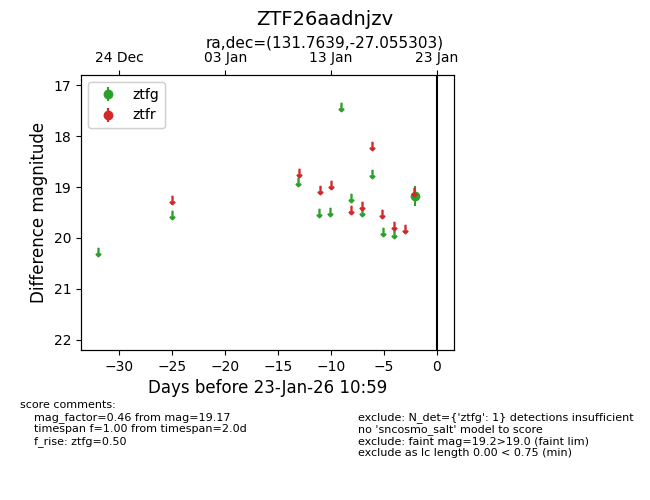
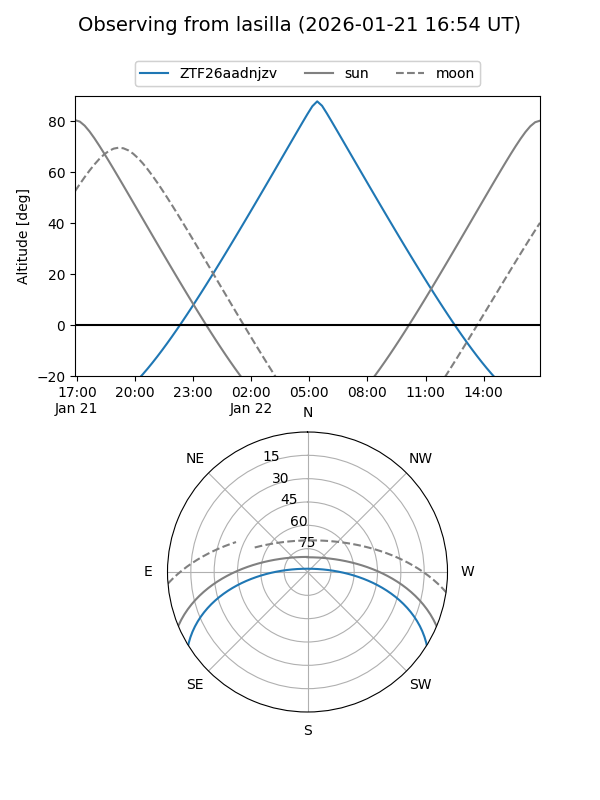
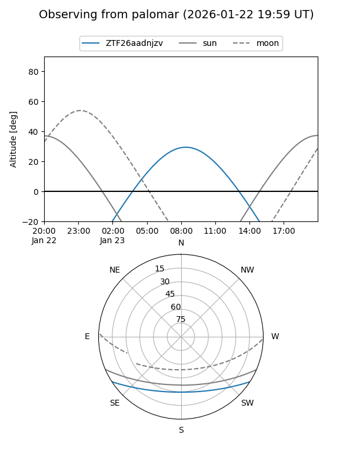

ZTF26aadnjzv
Target ZTF26aadnjzv at 2026-01-23 11:01
Aliases and brokers:
FINK: link
Lasair: link
ALeRCE: link
alt names
ZTF26aadnjzv (ztf,fink_ztf)
Coordinates:
equatorial (ra, dec) = 131.7639,-27.05530
equatorial (HMS+DMS) = 08:47:03.33,-27:03:19.09
galactic (l, b) = (250.5641,+10.11916)
Flags:
Photometry:
last ztfg=19.17
1 ztfg detections
Lightcurve

Visibility


Additional plots